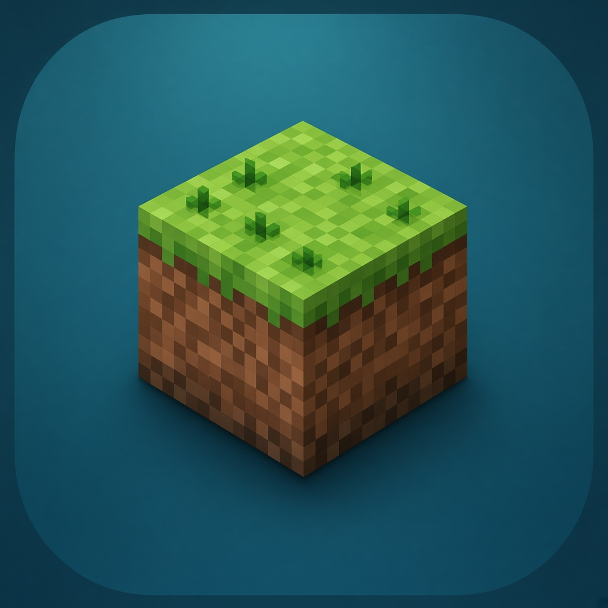
VMcraftPE 0.2.1Актуальная
Версия 0.2.1. Экран «Медиафайлы...» при входе в мир больше не разбирает все картинки сразу: текстуры открываются, когда они нужны.
Скачайте текущую или любую предыдущую сборку игры.

Версия 0.2.1. Экран «Медиафайлы...» при входе в мир больше не разбирает все картинки сразу: текстуры открываются, когда они нужны.
Снимки сделаны на телефоне с установленной игрой. Это не макеты: на каждом кадре то, что открывается в приложении.
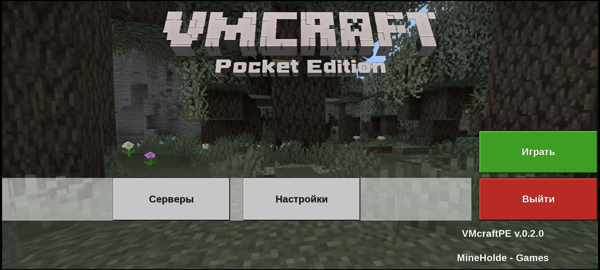
Меню на весь экран. Сверху логотип VMCRAFT Pocket Edition. Зелёная «Играть» открывает свои миры, красная «Выйти» закрывает игру. Серые «Серверы» и «Настройки» — слева. Внизу справа версия и подпись MineHolde - Games.
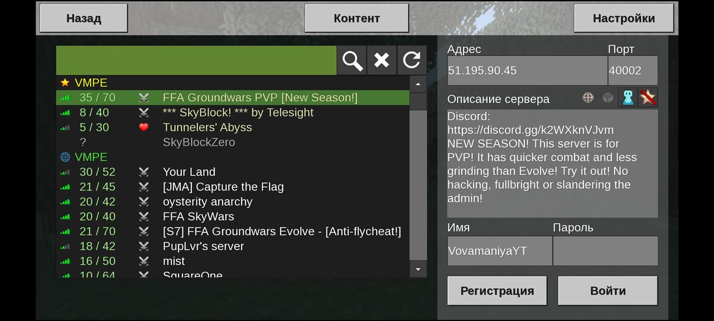
Слева имя сервера, число игроков и полоски пинга. Справа адрес, порт, описание, имя, пароль и кнопки «Регистрация» и «Войти». Сверху — «Назад», «Контент» и «Настройки».
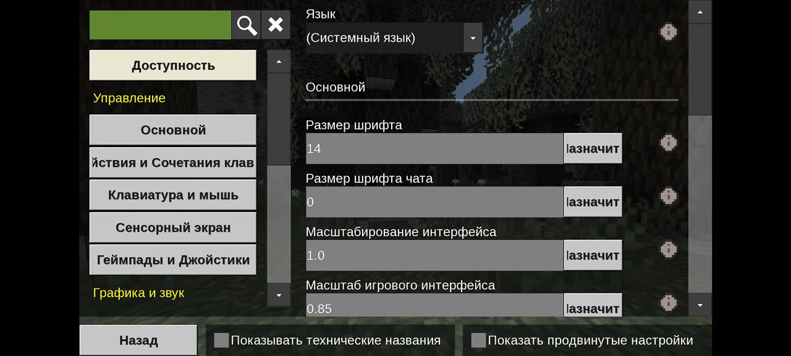
Слева разделы, на снимке открыта «Доступность». Справа язык, размер шрифта и масштаб интерфейса. «назначить» меняет число. Внизу «Назад» и флажки технических названий и продвинутых настроек.
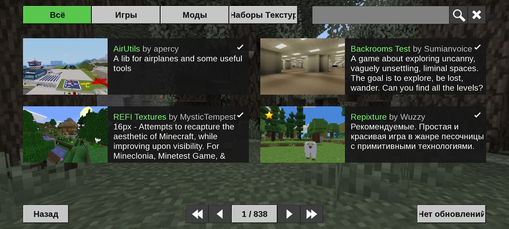
У карточки обложка, название, автор и короткое описание. Галочка значит, что пакет уже стоит. Сверху поиск, снизу листание страниц — на снимке 1 из 838 — и кнопка «Нет обновлений».
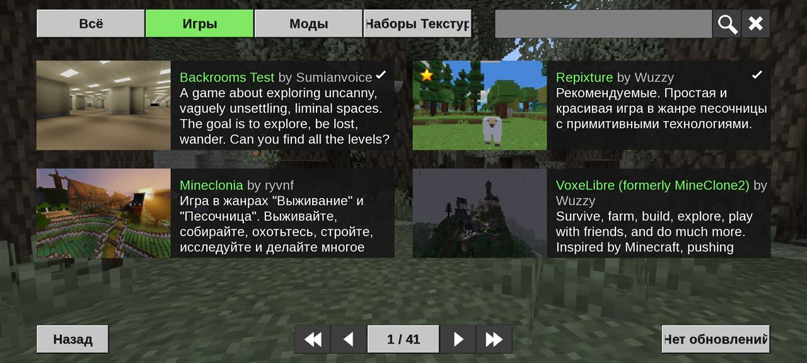
Здесь отдельные игры, не отдельные моды. На снимке страница 1 из 41. Галочка стоит у тех, что уже установлены.
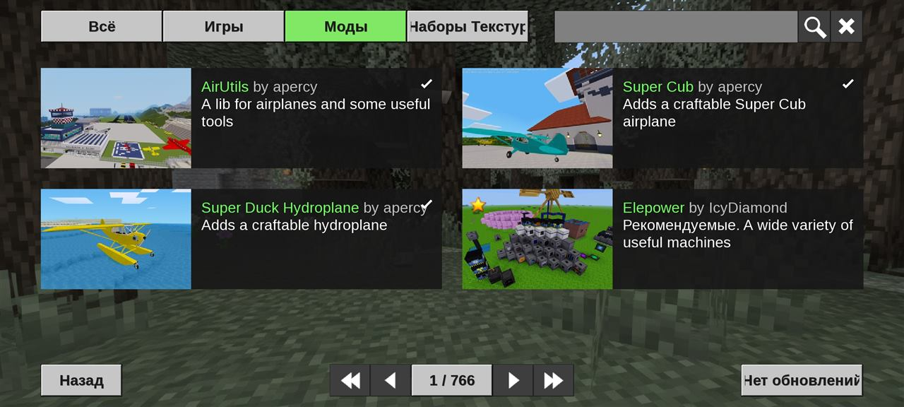
Дополнения к игре. На снимке страница 1 из 766: самолёты и механизмы. Нажатие на карточку открывает пакет, галочка показывает уже установленные.
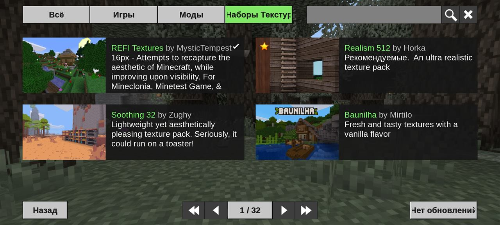
Сменный вид блоков и предметов, страница 1 из 32. На снимке REFI Textures, Realism 512, Soothing 32 и Baunilha.
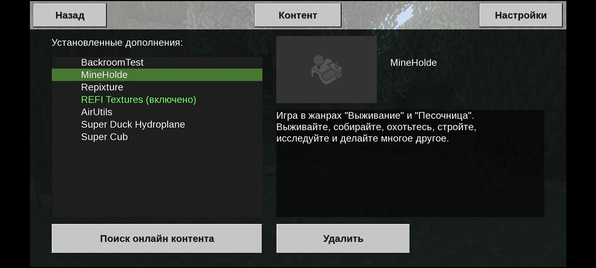
Слева список того, что стоит на телефоне, справа описание выбранного. На снимке выбрана игра MineHolde. «Поиск онлайн контента» открывает каталог, «Удалить» снимает выбранный пункт.
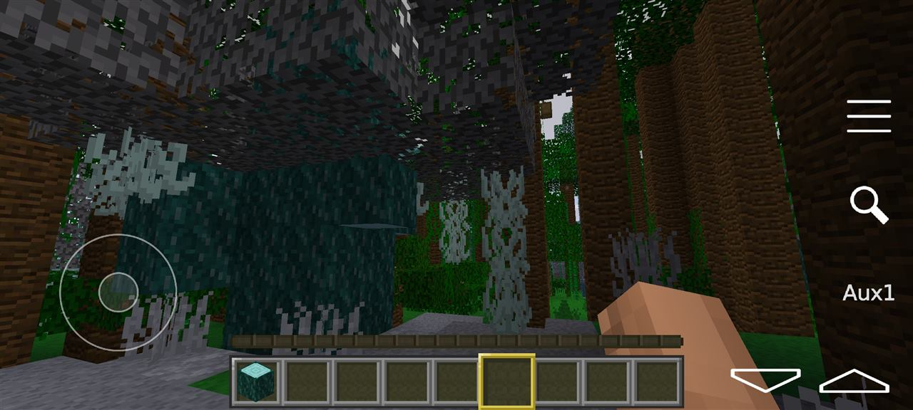
Обычный мир. Кружок слева — джойстик ходьбы. Внизу девять ячеек, выбранная обведена жёлтым. Справа кнопки меню, поиска и прыжка.
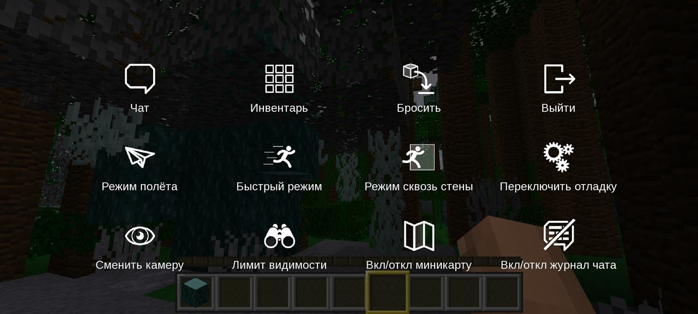
Кнопка меню открывает чат, инвентарь, «Бросить» и «Выйти». Дальше режимы полёта, быстрого хода и прохода сквозь стены, отладка, смена камеры, лимит видимости, миникарта и журнал чата.